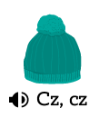
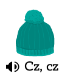
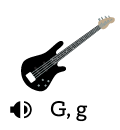
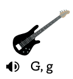
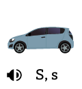
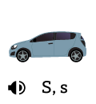

Index:
Udemy Polish Course:
Section 1: Day 1: Basics
Index for personal Polish notes:
Lecture 0: Polish words on the other page
Lecture 0: Polish verbs on the other page
Lecture 0: Interesting links
Lecture 1: Lecture 1: 31st July (Alphabets, basic questions)
Lecture 2: Lecture 2: 4th August (Pronounce tricky words, statements with Proszę...)
Lecture 3: Lecture 3: 7th August (Numbers 1-10)
Lecture 4: Lecture 4: 11th August (Days of the week)
Lecture 5: Lecture 5: 18th August (Changing endings of Verbs - Part 1)
Lecture 6: Lecture 6: 21st August (Numbers 11-200)
Lecture 7: Lecture 7: 25th August (Dlaczego uczysz...)
Lecture 8: Lecture 8: 28th August (Revision: Verb forms, money exchange)
Lecture 9: Lecture 9: 1st September (Commonly used verbs, Monety/Banknoty, Pronouncing numbers 100, 200, 300..)
Lecture 10: Lecture 10: 4th September (All numbers pdf, Understanding genders of nouns)
Lecture 11: Lecture 11: 8th September (Colors, Understanding endings of adjectives)
Lecture 12: Lecture 12: 11th September (Examples of forming sentences)
Lecture 13: Lecture 13: 15th September (Other examples of forming sentences)
Lecture 14: Lecture 14: 18th September (Ulubiony / Ulubiona / Ulubione)
Lecture 15: Lecture 15: 22nd September (Changing ending of Verbs - Part 2)
Lecture 16: Lecture 16: 25th September (Ile masz lat?)
Lecture 17: Lecture 17: 30th September (Some examples of forming sentences with verbs)
Lecture 18: Lecture 18: 2nd October (Kim jesteś z zawodu? / Male and female forms of nouns / Czym się interesujesz?)
Lecture 19: Lecture 19: 6th October Difference in changing endings when using Ten/Ta/To vs using only jest
Lecture 20: Lecture 20: 9th October Revision: Czym się interesuje?
Lecture 21: Lecture 21: 13th October Changing endings of Verbs - Part 3
Lecture 22: Lecture 22: 16th October Always, Often, Rarely, Never
Lecture 23: Lecture 23: 20th October Sentences using Jak często
Lecture 24: Lecture 24: 23rd October
Lecture 25: Lecture 25: 27th October More fun with endings of words
Lecture 26: Lecture 26: 30th October
- Polish Cheat Sheet PDF.
- Polish characters utf8 don't show right fix on SO.
- Polish is based on Latin alphabet and includes certain letters with diacritics:
a) Ą ą - nasal o, as French bon
b) Ć ć - cheap
c) Ę ę - nasal e, as French cinq
d) Ł ł - will
e) Ń ń - canyon
f) Ó ó - boot
g) Ś ś - sheep
h) Ż ż - vision
i) Ź ż - vision
- All of the above letters can be typed by Right Alt + English Character. Except for the last one, which is typed by Alt + x, giving Ź, as opposed to Alt + z that gives Ż.
- Polish has dimunitive forms. Which means that words can have different endings. It's a sort of endearment. Like how we have Charles and Charlie. Similarly, we can have Adam, Adaś, Adasiek, Adasik, Adaśko.
- Polish has three genders: feminine, masculine, neuter.
- Polish has 7 cases: Nominative, Genitive, Accusative, Dative, Instrumental, Locative, and Vocative.
- Online shopping: Allegro + paczkomaty
- Public transport: jakdojadę.pl / intercity.pl (for trains between cities)
- Medicine (English speaking doctors): znanylekarz.pl / gdziepolek.pl
- Emergency number for Europe is 112. Fire/Ambulance etc.
- Odmiana.net to check for cases.
- Diki.pl for translating polish to english
-
- Lecture 1 PDF
- Link to page containing pronunciation of words that are different in Polish when compared to English.
- c is a /ts/ sound. Like TSUNAMI.
- ę at the end of a word is pronounced just like polish letter e.
- Ó and U have the same oo sound.
- ż is a hard sound, and ź is a softer sound. Sound from L2.
- Pronouncing dz and dzi from Lecture 18. dzi is pronounced from the front part of your mouth, as if you were smiling.
- Polish does not have the letter v. So if you want to use it, it's pronounced as /fał/.

 


 


 



- sz sound is श sound. Think Szampon.
- rz sound is za sound which is the same as ż which is an alphabet and you can hear how to pronounce it here. Check how to say malarz (painter).
- cz sound is च sound. Think Czesc.
- dz sound is ज sound. Like j in judge or jeans.
- ch sound is kind of like soft ख sound. Think Chleb (bread). But sometimes it can also have a ह sound. See kochać.
- Ó and U have the same oo sound.
b) Lech / lecz
c) rzeka / szuka. rz is pronounced the same as ż.
d) dżudo / cudo. dż is like j in jeans, c is like /ts/
e) baco / bardzo
f) Skoda / środa
g) cztery / szeryf
h) są / sok
i) palić / palisz
j) poszła / poczta
k) łazanki / łazienka
l) groch / grosz

- Conversations pdf
- Numbers pdf
- Name + Surname check wordwall
- Cześć, co słychać wordwall?
- Adding numbers wordwall
- Hear and match words
- bardzo dobrze ++ (Very Good)
- dobrze + (Good)
- tak sobie - (Not great)
- źle -- (Badly)
- bardzo źle --- (Very Badly)
- fatalnie ----- (Disastrously)
- So if the question was: Jak ona się ma? which translates to "How is she?", you could reply with Ona się ma dobrze.
- Or you could reply with wszystko w porządku.
- Another similar question could be Co słychać? which would literally translate to "What's up?".
- Jak on ma na imię? : What is his name?
- Jak ona ma na imię? : What is her name?
- On is used for males, and ona is used for females.
- So the answer could be: On nazywa się Krsysiek Bogacki in the case of males. And Ona ma na imię Anna in the case of females. We are using nazywa for the male because we know his first as well as last name. nazywa is normally used when we know both. In the case of Anna, we only know her first name, and hence we use imię.
- Kto. It means "Who". So you can ask: Kto mieszka w Warszawie? which would translate to "Who lives in Warsaw?".
- Addresses will have a "/". As in, 10/3. The "/" is called przez.
_ is kreska (or instead of kreska, what is preferred is podkreślnik), @ is Małpa, . is Kropka.
- Lecture pdf
- Zakupy (Shopping items)
- Co słychać? wordwall.
- Unscramble days of the week wordwall.
- Arrange dialog in order wordwall.
- Co u pani słychać? wordwall.
- jak leci: Least formal way of saying "How is it going" / "What's up?"
- co nowego?, response would be nic nowego. Meaning: "What's new?", "Nothing's new".
- tak sobie / jako tako synonyms for "so-so". Sample conversation: Co słychać? Jako tako.
- po staremu is another way of saying nic nowego. nowego means "new" and stare means "old". So where nic nowego means "nothing new", po staremu means "everything old".
- stara bieda. stara means "old", bieda means "poor". So stara bieda would mean "everything is very poor".
- wszystko w porządku means "everything is fine".
- You can say "Mam na imię Filip", or in short "Jestem Filip".
- Stadion Narodowy here Narodowy means "National". So you will see Muzeum Narodowy, Bank Narodowy.
- budynek means building. Similarly we have urząd which means "office". Think urząd miasta.

- Source.
- Days of the week:

1) Monday
2) Tuesday
3) Wednesday
4) Thursday
5) Friday
6) Saturday
7) Sunday
- Co dzisiaj jest? (meaning: What day is today) Dzisiaj jest piątek (meaning: Today is Friday).
- Wczoraj jest czwartek (meaning: yesterday is Thursday).
- Jutro jest sobota (meaning: Tomorrow is Saturday).
- Lecture pdf: Changing Verb forms
- Lecture pdf: Co Słychać
- Czasownik "być" wordwall.
- To have wordwall.
- The verb to be wordwall.
- Mnie is another case for ja. Ja means "I". Mnie is another case of it that means the same thing. We will look at cases later in the course.
- Polish is an inflective language. It means that grammatical endings play an indispensable role in the language's grammatical system. Polish grammar, when compared to English is also very difficult. Polish uses a case system. For example, in English you can say "on the box", or "in the box", or "under the box". The word "box" stays the same irrespective of the context in which it is being used. Once you know the word "box", you can relax, you know it. In Polish, as in other Slavic languages, the word for "box" changes with the way it's used. Additionally, you have to worry about modifiers and genders that change the word further. This can result in challenges when you try to directly translate Polish to English.
- Also, word order is usually different, with the organisation of thought almost reversed from English, so that the stuff that you put at the beginning of an English sentence usually ends up at the end of a Polish sentence and vice-versa.
- Probably in your languages you don't have cases. In Polish we have 7 cases, but we only use 6. In English, the order of words is very important. In Polish not so much. Because in Polish we have endings. Only Polish and Portuguese have nasal vowels.
- Co słychać is unofficial. Co u pana / pani słychać is official because it contains pana/pani.
- We looked at possible replies in the earlier lecture. Then if you want to ask them back, then you can say A u ciebie, or A u pana / pani? if you want to be formal.
- When someone asks Jak się masz (meaning: how are you?), we normally reply with Dobrze, a ty? (meaning: good, and you?). But when someone asks Co słychać, we don't reply with Dobrze, a ty?, instead we say Dobrze, a u ciebie?
- Linking pdf related to this section again.
- The overarching point of the section is that in Polish verbs have different endings depending on the context in which they are being used. There is a "base" form of the verb that is called the infinitive form of the verb. In 95% of the cases, these infinitive forms end with the letter ć.
- For instance, consider the following conversation: Jak masz na imie? Mam na imię.... Here, masz and mam are two variations of the same verb mieć. But because they are being used in different contexts (used with different pronouns), the word ending changes.
- The table below shows the usage of three verbs. The heading of the column is the infinitive form of the verb. The values in the column are how that verb changes when it is being used with different personal pronouns present in the "Word" column. So for example, if you were writing "I live...", you wouldn't say "Ja mieszkam...". You would just say "Mieszkam...". The fact that you are talking about yourself is implicitly conveyed by the usage of the "am" ending of the infinitive verb mieszkać.
- Similarly if you were saying "You(plural) have...", you would just say "Macie..." and not "Wy macie..". (Read the asterisk point below).
| Singular/Plural | Word | English meaning | być (to be) | mieć (to have) | mieszkać (to live) |
|---|---|---|---|---|---|
| Singular | ja * | I | jestem | mam | mieszkam |
| Singular | ty * | You | jesteś | masz | mieszkasz |
| Singular | on/ona/ono pan/pani |
he/she/it (can also refer to a child) also he/she but used in official places |
jest | ma | mieszka |
| Plural | my * | We | jesteśmy | mamy | mieszkamy |
| Plural | wy * | You (but in plural form) | jesteście | macie | mieszkacie |
| Plural | oni/one państwo |
they also they but used in official places |
są | mają | mieszkają |
- Also note that there are only three tenses in Polish: past, present, future. Every thing that we are doing here is in the present tense only. We will look at tenses later.
- Note the words that have an *. The rules dictate that these words should be hidden when you are forming sentences. For example, you write: Mam na imię Alice, and not Ja mam na imię Alice. We don't need the "Ja" because of endings. "Mam" is typical only for "Ja". That's why it is not necessary.
- But in the case of the words without an asterisk, we have many options. If you wanted to say "She has...", you would say "Ma..", but you lost the information about whether you are referring to a "On/Ona/Ono/Pan/Pani". Hence, in that case you DO prepend the "Word" before the verb to preserve that information. So you write Ona ma na imię.
- The same logic applies to the "Oni/One/Państwo" row as well.
- Another example, suppose you wanted to ask: "What is your name?", you would say Jak masz na imię?. Now you want to ask: "What is her name?", you say: Jak ona ma na imię?. So how to answer: Ona ma na imię Eva.
- Short exercise to test your understanding of this:
- In English we just have "they" when we are referring to a group. In Polish, the word changes depending on whether the group we are referring to have males or females or mixed.
- Oni is used for groups of people that contain men. One is used if the group contains only women. Even there is even a single man in the group, we use Oni. 10 women. One. 10 men. Oni. 10 million women, and one man. Guess what? Oni.

- For referring a man in official setting we use Pan. For referring to a woman in official setting, we use Pani. For referring to a child, we use dziecko. For referring to a group of people that contains both men and women in official setting we use państwo.
- Lecture pdf
- Numbers wordwall.
- YT video: how to count numbers 0-99.
- Skąd jesteś? wordwall.
- The general rule of thumb in forming the Polish numbers 11-19 is to add -naście to the numbers 1-9. Eg. 12 would become dwa + naście = dwanaście.
- To form these numbers, first we need to know how to pronounce the following numbers:
- Similarly 22 is formed following the same pattern dwadzieścia + dwa = dwadzieścia dwa, as are all subsequent numbers.
- 44 would be Czterdzieści cztery.
- 58 would be Pięćdziesiąt osiem.
- 123 would be sto dwadzieścia trzy
- Lecture pdf
- Dlaczego uczysz się języka polskiego? wordwall.
- żeby czy bo wordwall
- Dlaczego? Bo/żeby wordwall.
- Dlaczego uczysz się polskiego? (meaning: Why are you learning Polish?)
- There are two options to answer questions like this:
a) You can use źeby (meaning: in order to) followed by a verb. So you can say: źeby pracować (in order to work), żeby studiować (in order to study).
b) You can use bo (meaning: because) followed by an entire sentence. So you can say: bo to moje hobby (meaning: because it's my hobby), bo studiuję w Krakowie (meaning: because I study in Krakow)
- Timestamp to wordwall exercise discussion.
- Lecture pdf
- koniugacja m,sz wordwall.
- Koniugacja -m, -sz wordwall.
- Ex 1-3 homework
- Verb conjugation YT video
- Nominative Case YT Video (// TODO: Learn Polish with Monica)
- Verb conjugation: Course of Polish book snippets. (// TODO: Read the relevant chapters)
- Verb conjugation: Google docs
- Chcę wymienić euro (meaning: I want to exchange euros).
- jaki jest aktualny kurs euro (meaning: what is the current euro exchange rate). The response would be something like: Kupno 4,04 zł, sprzedaz 4,12 zł (meaning: Buy PLN 4.04, sell PLN 4.12)
- Note that in Polish we don't normally pronounce the
,. For instance, 4.12 in English would be "Four point one two", but in Polish, 4,12 is cztery
dwanascie. This is normally the case when we are pronouncing prices. If you want, you can pronounce the , in between. , is pronounced as przecinek. - For my (meaning: We), the verb would also end in -my.
- For ja (meaning: I), the verb would end in -m.
- For ty (meaning: You singular), the verb would end in -sz.
- For wy (meaning: You plural), the verb would end in -cie.
- For oni/one (meaning: They male/female), the verb would end in -ją.
- For on/ona/ono (meaning: He/She/It), we are not adding anything. Instead, we remove the ending from the infinitive form.
- Timestamp to section with exercise with phrases.
- mieć is an irregular form which means "to have". See how to convert it in lecture here.
- Lecture pdf
- Czasowniki - koniugacja -m, -sz wordwall.
- Koniugacja -m, -sz wordwall.
- -M-SZ wordwall.
- Koniugacja III -m, - sz wordwall.
- Verbs on the other page.
- A note about pronouncing. Take rozumieć for example. This is the infinitive form of the verb. If you want the Wy form, it would be rozumiecie. Pronouncing rozumieć, and pronouncing rozumiecie. Note the difference in pronunciation. Link to lecture explaining the difference. rozumieć ends with a consonant, rozumiecie ends with a vowel. It is one syllable longer.
- Another note about irregular forms. wiedzieć is an irregular form. We use the Ja form in order to form the verbs in cases like these. The ja form of wiedzieć is wiem. So the On form of wiedzieć will be wie.
- For when someone starts talking at you: Przepraszam, nie rozumiem. Proszę mówic wolniej (meaning: I'm sorry I do not understand. Please speak slower). wolniej means slower. Why does it use the infinitive form of the verb mówic? Because after Proszę.. we always use the infinitive form of the verb.
- (Ja) Czekam na siostrę (meaning: I'm waiting for my sister). Czekam is always followed by na. So if you wanted to say "We are waiting for tram", it would be: Czekamy na tramwaj, not Czekamy tramwaj.
- Codziennie wracasz do domu o piątej. Codziennie is coming from dzien, it means every day/daily. Do means "into" and o means "at". So the meaning would be: "every day you come back to home at 5".
- Czy często słuchacie muzyki jazzowej?. często means "often". So the meaning would be: Do you often listen to jazz music?
- Coins are generally called monety and paper notes are generally called Banknoty.
- ATM is called bankomat.
- In Polish currency, the notes are called złoty and the coins are called grosz. The endings of Polish currency depending on the amount that we are talking about.
-
If the amount is 1, we use 1 złoty or 1 grosz
.-
If the amount is either 2, 3, or 4, or ending in 2, 3 or 4, we use 2 zlote or 2 grosze
. The exception to this rule are the numbers like 12, 13, 14. For these since we do not pronounce the dwa, trzy, cztery at the end of the numbers, these take the złotyc form. Hence these are just pronounced as dwanaście złotych, trzynaście złotych, czternaście złotych. But if you had 22zł for example, it would be pronounced as dwadzieścia dwa złote. Timestamp to explanation from lecture 25. Same exception also applies if the number was 112, 113, 114 for example.-
If the amount is 5 or greater, we use 5 złotych or 5 groszy
.- Timestamp to lecture 25 where the same things were discussed again.
- Those highlighted in red below are the correct options:
- Lecture pdf
- All Numbers Pronunciation PDF
- -m, -sz Hurra 1
- Mianownik
- Mianownik (HW)
- Mianownik (Another HW)
- Nominative Case YT Video
- On: he, Ona: she, Ono: it
- In Polish, nouns have genders.
-
A noun will be Ona if it ends in -a
. There are exceptions where sometimes a noun can end in -o or -i and still be Ona. Eg. pani, noc.-
A noun will be Ono if it has any of the following four endings: -o, -e, -ę, -um.
-
A noun will be On if it is ending in a consonant.
There are exceptions like dentysta, kolega that end in -a, but are On and not Ona. These exceptions will often have endings in -ta, like artista, but not always.- In order to construct sentences as per Polish grammar rules, we need to know what the gender of a noun is. This will become important then.
- For example consider the three nouns telefon (on), ksiąsżka (ona), mieszkanie (ono). If you wanted to construct sentences using these they would differ:
a) Mój telefon jest nowy.
b) Mója ksiąsżka jest nowa.
c) Móje mieszkanie jest nowe.
- Rodzaj męski, rodzaj żeński, rodzaj nijaki meaning noun male, noun female, noun neutral resp.
Question: Why is this happening? książki ends in -i, so it should be on, but we are using it as ksiąsżki historyczne implying that it is neutral? Same for gry komputerowe. And for filmy kryminalne.
Answer: Explained in the next lecture. książki is the plural form of książka. So if we were talking about a single book, it would be treated as Ona, so we would write polska książka. But because this is a plural, we treat it like Ono, and hence we would write polskie książka.
- Lecture pdf
- Co to jest? Kto to jest?
- Mianownik przymiotnik wordwall.
- Mianownik i przymiotnik wordwall.
- przymiotnik - mianownik Jaki jest?
- We change the endings of adjectives just like we changed the endings of nouns. So if we know the noun has the form of on/ona/ono, then we need to change the form of the adjective as well so that it has the same form as the noun, ie. on/ona/ono.
-
If the noun is of the form On, then the adjective associated with the noun will end in either -y or -i.
Normally the endings will be in -y. Eg. stary (meaning: old), dobry (meaning: good), nowy (meaning: new). The ending -i exists only when the letter preceding the -i is either "g" or "k". For example, drogi (meaning: expensive), or wysoki (meaning: high/tall). This is a general rule in Polish grammar, not just restricted to forming adjectives. Ie. after the letter "k" or "g", we never have the letter "y".-
If the noun is of the form Ona, then the adjective associated with the noun will end in -a.
Eg. stara, droga. Note that this form does not change if the previous letter is "g" or "k". So the adjective in this form is still droga for instance.-
If the noun is of the form Ono, then the adjective associated with the noun will end in either -e or -ie.
Normally the endings will be in -e. Eg. stare, dobre. Similar to the case with on, when the word ends in "k" or "g", we do not end in -e but end in -ie instead. So drogie, wysokie.- Below is an example of adjectives with different endings depending on the gender of the nouns that they are being used with:
- The word "This..." in English changes depending on the gender of the noun that we are talking about. This is shown in left column in the below image.
-
So for instance, noun słownik (meaning: dictionary) ends in consonant, and is hence of On form. So "This dictionary..." would be Ten słownik.... Similarly, komórka (meaning: cellphone) ends in letter "a", and hence is of form ona. So "This cellphone..." would be Ta komórka.... Similarly, radio ends in letter "o" and hence is of form ono. So "This radio.." would be To radio...
- The version of the adjective ending to use is shown in the right column (same as we saw in the above section).
- So suppose you want to convert "This book is good." to Polish. How would you do it. First you look at the noun in the sentence which is ksiąsżka, and it ends with an -a, making it of the form Ona. Hence, the adjective associated with the noun as well as the word "This" will be both the Ona version. Ona version of "This" is Ta, Ona version of dobrze is dobra. So the translation would be Ta ksiąsżka jest dobra.
- "This bus is German". The noun is autobus (on), the adjective is Niemieckie, which when converted to On form would be Niemiecki (note that this is the exception case where the preceding word is k/g and hence we do not use the -y ending but instead use the -i ending). So the translation would be Ten autobus jest niemiecki.
- If you are going to use two nouns where one of them is On and the other is different, like Ono, then we have to repeat the words. For instance, you would say: Ten autobus jest nowy i ta taksówka jest stara (taksówka: meaning taxi).
- This can be "How?", "What?", "Which?". It's not a clear conversion. But the answer to these types of questions is always an adjective.
- Below are some examples of using adjectives with nouns. Note that the noun that is being used is in the same gender as that of the adjective. For instance, stary ends in -y and hence is of Jaki (On) form. So the noun that we should use along with this adjective should also be of the On form, ie. the noun should end in a consonant. Same rules apply for the other ones as well.
-
Cheatsheet
that shows what we discussed in the above two lectures in one place:- Lecture pdf
- Dialog- l.1-3 KPK wordwall
- Jaki on jest? test wordwall
- Przymiotniki (HW) wordwall
- DOPASUJ PRZYMIOTNIK DO RZECZOWNIKA (HW) wordwall
- Consider the two sentences: Biedronka jest tania, a Żabka jest droga and Norwegia to stary kraj. In the first sentence we changed the adjective to end in -a because it was describing Biedronka which ends in -a. But in the second case, the adjective stary is describing the kraj (country), which ends in a consonant and hence the adjective ends in -y. If we wanted to rewrite the second statement in the form of the first, we would have said: Norwegia jest stara kraj.
- Jak się masz? is about "How are you?". Jak się czujesz is more about "How do you feel" or "How is your health".
- Lecture pdf.
- Fill in the blanks doc.
- Stacja 3 - Julia ma randkę z przystojnym chłopakiem!
- Ulubiony twój wordwall. (HW)
- Mój ulubiony... wordwall. (HW).
- ulubiony means "favorite".
- The ending will again change depending on the noun that is being described. So we have ulubiony film "Casablanca", ulubiona muzyka jazz, ulubione ciasto sernik.
- Consider couple of other examples: ulubiony dzień tygodnia sobota, ulubiona marka samochodu (marka means "brand"). In these examples the ending of ulubion- depends on the word that is immediately following it. So we don't say ulubiona dzień tygodnia or ulubiony marka samochodu, ie. the ending of ulubion- is not being decided by either tygodnia or samochodu. You could say ulubiony samochod Toyota. Similarly we have ulubiona dyscyplina sportu boks and we can rephrase it as ulubiony sportu box.
- If you wanted to make a sentence describing yourself, then you would say something like Mój ulubiony samochod Maruti Zen, Mója ulubiona książka Catch-22, Móje ulubione miasto Kraków. Point to note is that the usage of Mój also changes depending on the ending of ulubion*.
- If you wanted to ask a question "What is your favorite car?", you would say something like: Jaki jest twój ulubiony samochod? We saw that Co translates to "What"? So why don't we use it here to form the questions? When we already have a noun in the question, we do not use Co. So we have Co lubisz? No noun in question. But here we already have a noun as samochod. So we don't use Co, and instead use Jaki. Timestamp to section with explanation.
- Similar to previous cases, the ending of Jaka will also change depending on the form of ulubion* being used. Jaki jest twój ulubiony film? Jaka jest twója ulubiona muzyka? Jakie jest twóje ulubione miasto?
- Lecture pdf.
- Homework Document to fill in.
- 6. Połącz w pary section.
- L8 8.2 ulubiony, -a, -e wordwall.
- koniugacja -m, -sz zdjęcia wordwall.
- koniugacja ę/y/isz (H1L3, KPK L4) wordwall.
- Koniugacja -ę, -isz / -ysz wordwall.
- Koniugacja -ę -isz + -ę -ysz myśleć, uczyć, mówić, lubić, kończyć, tańczyć, palić wordwall. (HW)
- Question: Why is this happening? książki ends in -i, so it should be on, but we are using it as ksiąsżki historyczne implying that it is neutral? Same for gry komputerowe. And for filmy kryminalne. Explained in the next lecture. książki is the plural form of książka. So if we were talking about a single book, it would be treated as Ona, so we would write polska książka. But because this is a plural, we treat it like Ono, and hence we would write polskie książka.
- We looked at the different ways that the endings of the verbs change in Lecture 5. Those ending are mostly for verbs that end in -ać or -eć. For example, czytać, oglądać, słuchać, rozumieć, umieć... Those were the first set of tips on changing endings of verbs.
- Now we look at second types of verb endings. This tip deals mostly with verbs that are ending in -ić or -yć. For example, lubić, mówić, myśleć, uczyć się, kończyć... Verbs like myśleć also fall into this category instead of the first one. These are mostly exceptions.
- This is what the endings look like under the new rule:
In ja form where in the previous case we appended -m, now we append -ę. And in the case of oni/one where we appended -ją, now we just append -ą
.- Below are some example of verbs as per these new rules:

- Nigdy nie śpię długo meaning: "I never sleep for a long time". (Base version of verb: spać).
- Każdego popołudnia uczę się języka polskiego dwie godziny meaning: "Every afternoon I learn polish for two hours." (Base version of verb: uczyć się)
- Robimy dziś zakupy meaning: "(We) Doing today shopping". (Base version of verb: robić)
- Codziennie budzą się o siódmej meaning: "Everyday (they) wake up at seven". (Base version of verb: budzić się)
- Czym Mikołaj jeździ na uniwersytet? meaning: "What Mikołaj rides to university?". (Base version of verb: jeździć). Czym might look similar to Czy. Visually they are similar, but they mean different things. Czy is used for questions of tak/nie form. Czym would translate to "What"?. Similar to Co.
- Czy lubcie jeździć na nartach meaning: "Whether you (plural) like to ski"? jeździć we saw above means "to ride". Nartach refers to the noun "skis". So together jeździć na nartach becomes "to ski".
- Another set of examples:
- Lecture pdf.
- Conjugation ę-, -isz/-ysz (A1) wordwall.
- Hobby doc.
- stacja 1/5 (HW).
- Hobby wordwall.
- Skąd: Skąd jestes? Jestem z Indii.
- Język: Czy znasz język hiszpański? Nie.
- Imię: Jak masz na imię? Mam na imię Alice.
- Nazwisko: Jak masz na nazwisko? Mam na nazwisko Doe.
- Jaki: Jaki masz numer telefonu?
- Jaka: Jaka jest dzisiaj pogoda? (Pogoda is Ona, and hence we use Jaka).
- Jakie: Jakie jest twoje ulubione piwo? Moję ulubione piwo to czarny.
- Mówić: Mówisz po polsku? Trochę. - Ile: Ile kosztuje jabłko?
- If we were asking this to two people or more, this would become Ile macie lat? because of the verb conversion rules we saw before.
- If we were asking this to a man in an official setting this would become Ile pan ma lat?
- If we were asking this to two people in an official setting this would become Ile pań stwo mają lat?
- There are 3 ways that you can answer this question:
a) rok is used to reply if your age is 1 year. So we can say dziecko ma rok instead of dziecko ma jeden rok.
b) If the age ends in 2, 3, or 4, we use lata to answer. So you would say Ona ma dwadzieścia dwa lata, or On ma sto cztery lata. The exception to this rule are the ages 12, 13, 14. The reason is that while in the case of 22, we are pronouncing the dwa at the end of the number, in the case of 12, 13, 14 we are NOT pronouncing the 2, 3, 4 in the end respectively (dwanaście, trzynaście, czternaście). In the case of 12, 13, 14, we use lat.
c) Else: we use lat to answer.
- Lecture pdf.
- 9_Jak myślisz, ile on/ona ma lat? wordwall.
- On jest... wordwall.
- Hobby (co pasuje) wordwall.
- Stacja 2: Section 2 and 4. They write it like this: stacja 2/2,4
- Learning apps - read q and a (HW).
- PDF to fill and send (HW).
- Learn Polish Grammatical Cases
- Noun declension: Summary of endings Course of Polish link.
- Czesław Miłosz Polish Poet

- Another interesting thing: the endings of the names of people change as well. Timestamp to discussion. So for example, if we want to say "I know Raj", in Polish we would say znam Raja. This change of noun depends upon either the verb or the preposition. Refer the last two links in the references section of the lecture to read about it. We will be covering this in future lectures though.
- Kim jestes zawodu word doc.
- Czym się interesujesz word doc.
- Combined above two and (mostly) filled word doc.
- Pracuje???? (HW).
- Hobbies wordwall crossword (HW).
- Jobs wordwall (HW).
- Convert male and female forms of nouns (HW).
- A question would be like: Czy umiesz jeździć na nartach? meaning "Can you ski"? Since it is a Czy question, the answer would be of Tak/Nie form. So the answer would be Nie umiem jeździć na nartach.
- Kim pan/pani jest z zawodu? means "What's your job?" So if you look at the literal translation of Kim, it is "Who". It does not make much sense asking "Who is your job?" The literal translation here is "Who are you by profession?", in other words, "What's your job" So how do you reply?
-
Suppose you were an aktor, which is of the On form since it ends in a consonant, you would say Jestem aktorem. But if you were an actoress, you would be aktorka, which is of the Ona form since it ends in -a, in which case you would say Jestem aktorką. Similarly, if you were a lekarz (doctor), it would be Jestem lekarzem, and if you were a kelnerka, it would be Jestem kelnerką
.- So there are actually two things going on simultaneously here. If you were doing movies and stuff, you would call yourself aktor or aktorka, depending on whether you were male or female respectively. This is the step 1 change in the "base" word that we are doing. Then, if someone came along and asked you Kim pan/pani jest z zawodu?, you would say Jestem aktorem or Jestem aktorką respectively. And this is the step 2 change in the ending of the word that we are doing.
- Compare this to something like informatyk that does not have a separate female form. So irrespective of whether it was a guy or girl saying it, the word after the step 1 change we saw above would stay the same. So both men and women would say Jestem informatykem, and that is because informatyk ends with a -k, which is a consonant, and hence is of the On form.
- We will be looking at masculine and feminine
forms of some nouns and see how they change depending on the endings of the words
.- Czym się interesujesz would mean: "What are you interested in?" The answer would be something like Interesuję się historią. Again, the ending of the noun would change depending on the gender of the noun being used.
-
If the noun is male or neutral, we would add -em to it's ending. If the noun is female, we would remove -a and add -ą
.
- Lecture 19 PDF.
- Zawody i narodowości wordwall.
- s.1-5- please choose one person and describe (writing)
- Skąd on jest? On jest z USA.
- Gdzie on mieszka? On mieszka w Chicago.
- Jaki on jest? Jaki jest energiczny, wysoki, i pięknym.
- Jaki on zna język? On zna język hiszpański.
- Czym on się interesuje? Interesuje się fotografią i matematyką.
- Co on lubi robisz? On lubi grać na gitarze.
-
TODO:
Question: What is the first word that we should look at when we are deciding what endings should we look at?-
TODO:
Question: Mahatma Gandhi był Hindusem pacyfistą i politykiem. Why is one ending female (pacyfistą) and the other one male (politykiem)?-
TODO:
Question: Maria była Polką chemiczką i fizyczką but Mikolą był Polakiem astronomem. Why two different endings - Polką and Polakiem? Aren't these endings of the adjectives supposed to NOT depend on the gender of the person that they are describing but instead depend upon the gender of the base form of the adjective itself or something??- We say Jestem Francuzką but Jestem Niemcem. The endings change because of the same rules that we followed when changing the endings of the profession in the previous lecture. You could use the simple form like Jestem z Francii, Jestem z Polski as well.
- In general, when we are using the verb jest (meaning: to be), we need to change the endings of the nouns. Two possible endings over here: -ą or -em.
- So we don't say: Ona jest studentka, instead we say Ona jest studentką. This is because we are using the verb jest and we are not using To.
- So if we were asking Kto to jest? we would answer like To jest Anna. To jest studentka (we saw how we change endings for Ten/Ta/To earlier in Lecture 12). Kto is used when we are literally asking about who that particular person is. Kim is used when we want some more info regarding the person. So in such cases we would ask Kim ona jest? which we would answer like Ona jest studentką, or On jest biznesmenem , or Ona jest lekarką. We are changing the endings.
- TODO: I really don't know what is going on here. Why are we doing what we are doing?
- Here are some more examples of usage of the two formats. Jest/Jesteś/Jestesmy always need to have the endings changed. So we would say Jędruś jest sympatycznym dzieckiem but Jędruś to sympatycznye dziecko.
- Few exceptions: for instance number 4, it's Adam jest wysportowanym mężczyną because the basic form of the last word is mężczyna, hence we write it as mężczyną and not mężczynem or something like that. So in this case it is only the adjective wysportowany that is converted into it's masculine form. Same for number 6, base form of noun is poeta, so it gets changed to poetą. Only the adjective dobry gets converted to the masculine form of dobrym. Timestamp to explanation.
- Timestamp to discussion of below image.
- Co and Czym translate to the same word "What" but they are used differently. Similar to what we saw with Kto/Kim above.
- After interesujesz we always need a noun. So we can't say interesujesz czytać instead we say interesujesz literaturą. After lubię we can have a verb, and hence we can say lubię czytać.
- The ending would change while answering Czym się interesujesz. We already saw this in the previous lecture.
- Some places you will see words are like samolotami, językami, zwierzętami. These are just the plural forms of the words samolot, język, zwierzę. Irrespective of whether the noun is of the form On/Ona/Ono, the plural form will end in -ami. (TODO: Will it though? I don't think this is correct?)
- Timestamp. It's Mój ulubiony owoc to jabłko Why? Because Owoc is On (ends in consonant). Hence we need to adjust. Moja ulubiona kawa to ... because kawa is Ona (ends in -a). Moje ulubione miasto to ... because miasto is neutral.
- Timestamp. Lech Wałesa jest polskim politykiem i byłym prezydentem. But we have Politechnika jest dobrym uniwersytetem. From what I understand, in the first example, we are converting all the nouns to the male form because Lech Wałesa is male. So it is that word which is deciding that the statement should have all the verbs in the male form. But in the second example, it seems it is uniwersytetem that is deciding? Because going by the logic in the first example, Politechnika is Ona, and hence the statement should have been Politechnika jest dobrą uniwersytetą? But it isn't?
- Why? Timestamp. For people we adjust the name and the function for male and female. For example, we have aktor and aktorka. So when we are referring to persons, like through their profession, we change the nouns depending on the gender of the person. But for the things that are not describing people, like uniwersytet, it is always male by default. So another example, we have polak to describe Polish men, but polka to describe Polish women. Samochod, dom, .. these are all male by default.
- Ona jest piosenkarką. Ona interesuje się teatrem. Note the endings. We have piosenkarką ending in -ą, but teatrem ending in -em. Why? . Piosenkarka is describing _her_. So we change the ending to Piosenkarką. Had it been a male singer, we would have changed the ending to Piosenkarz and written On jest piosenkarz. In the case of the second statement, we are not describing her, as in we are not saying "she is a theater". And that is why teatr changes to teatrem, since teatr is male.
- Similarly, consider Ona jest matematyczką. Basic form is matematyczka. Since we are describing a female mathematician, it becomes Ona jest matematyczką. Ona interesuje się matematyką. matematyka is the basic form, which is female, and hence we added the -ą ending. Even if we were describing a male mathematician, the ending of the second sentence would not change, and we would still have written On interesuje się matematyką. So suppose it was a male mathematician, the two sentences would have become: On jest matematykiem. On interesuje się matematyką.
- Lecture 21 PDF.
- Verb conjugation google docs (same one we have used in previous lectures).
- Dlaczego...? Bo... wordwall.
- koniugacja ę, esz.
- Section 1 and 3.
- Co pasuje? (Koniugacje) HW wordwall.
- koniugacje HW wordwall.
- We have three different forms of endings of verbs in the present tense. First one we saw in Lecture 5 was (mostly) for the verbs ending in -ać and -eć. There we got rid of the -ć and instead added the new ending. The second one we saw in Lecture 15 was (mostly) for the verbs ending in -ić and -yć. There again we got rid of the -ć and instead added the new ending. The only difference in the endings compared to Part 1 was in the ja and oni/one form. In the case of ja, in Part 1 we added -m, in Part 2 we added -ę. In the case of oni/one, in Part 1 we added -ją, in Part two we added -ą.
- Part 3 concerns with the rest of the verbs that don't fall in the above two categories. The difference compared to above two is in the ty form. While in parts 1 and 2 we were adding -sz or -ysz, in Part 3 we add -esz.
- Some of the verbs that fall into this category are verbs ending in -ować. These are often verbs imported from other languages, like dyskutować, parkować, malować, spacerować, pracować. How do we change the endings of these verbs? We get rid of the -ować. In its place we add the word -uj- and then we add the remaining ending.
-
Rules for all the 3 parts from the google doc linked above.
The base form of the verbs in number 3 are: brać, pracować and gotować.- For ja, the two possible endings are -m/-ę (czytam/robię)
- For ty, the ending is always -sz
- For on/ona/ono/pan/pani, the ending can be -a/-e/-i/-y (czyta/pracuje/robi/uczy)
- For my, the ending is always -my
- For wy, the ending is always -cie
- For oni/one/panie/panowie/państwo, the ending is always -ą
- Example from Lecture 25: Rodzina rossini często podróżuje. Rodzina means "family" and it is On/Ona form.
- Lecture 22 PDF.
- HW Doc PDF.
- Koniugacja 1 (-ować) wordwall.
- Koniugacje wordwall.
- Dopasuj czasownik do osoby (wszystkie koniugacje) wordwall.
- Endings of verbs HW.
- 11_Koniugacje - formy JA (gra) wordwall.

- Source (ZAWSZE TŁUMACZĘ POLSKIE SŁOWA!)
- Zawsze: Always
- Zwykle/Generalnie: Usually
- Często: Often
- Czasami: Sometimes
- Rzadko: Rarely
- Nigdy: Never
- We normally use these to ask questions like: Jak często chodzić do kina?, Jak często czytać ksiaszki
- Lecture 23 PDF.
- jak często? wordwall.
- Jak często? wordwalll.
- Jak często? wordwall.
- Co lubisz robić? HW wordwall.
- Co lubisz robić? LITEROWANIE wordwall.
- Sections 1 and 9.
- Jak często chodzisz do muzeum?, Jak często jeździsz taksówką? (taxi), Ja często pracujesz, Jak często jeździsz na nartach?, Jak często spotykasz się z kolegami.
- Timestamp to discussion with wordwall filling in the sentences in order that answer questions using często.
- Często chodzę do kina, bo bardzo interesuję się kinem.
- Marek bardzo rzadko ogląda telewizję, ale lubi oglądać seriale na Netfliskie.
- Moi rodzice nigdy nie pracują w weekendy.
- Od czasu do czasu chodzimy z córką na basen.
- Rzadko chodzę na koncerty do filharmonii, bo nie interesuję się muzyką klasyczną
- Czy ty naprawdę co tydzień grasz w tenisa? This form is also correct though: Czy ty naprawdę grasz w tenisa co tydzień?
- Co zwykle robicie, kiedy macie dużo wolnego czasu?
- Czasem czytamy wiadomości po polsku
- W weekend zawsze spotykam się z kolegami.
- Nasze koleżanki często tańczą i śpiewają.
- Czy lubi pan kino? in case you want to ask someone a question in an official way: Do you like cinema?
- (1) is Ty form. The verb can only end in -sz. Hence we have only one option: interesujesz się muzyką i lubisz śpiewać.
- (3) is brat meaning brother. Hence, on will be used in the column 4 option.
- (5) is Ja form. The verb will end in -ę. Hence we have only one option: interesuję się literaturą i lubię czytać. Jestem wspaniałą kobietą.
- Lecture 24 PDF.
- HW PDF.
- Lubię ... Interesuję się ... wordwall.
- Stacja 1/8
- Few words in the below example end in -mi. Recall that this is because they are the plural forms of the respective words.
- If you wanted to say "I am interested in Polish movies", you would say: Interesuję się polskymi filmami. "I am interested in travel" would become Interesuję się podróżami. The noun is podróż, we are converting it to podróżami. "I am interested in animals" becomes Interesuję się zwierzętami.
-
- Lecture 25 PDF.
- 4. Która forma jest dobra?
- Lekcje 1-4 KPK wordwall.
- Pieniądze, ile to kosztuje.
- Another: Pieniądze, ile to kosztuje.
- Bardzo dobrze mówię po niemiecku
- Czy dobrze znasz francuski?
- Dzisiaj jest poniedziałek
- W sobotę nie pracujemy
- Jak się mówi po polsku "question"?
- uczę się polskiego, bo moja dziewczyna jest z Polski
- Rynek jest na prawo
- Warszawa to stolica Polski. Polski here is noun. We can write the same sentence in another way. We would need to change the noun to adjective. So it would be Warszawa to Polska stolica.
- Antonio jest z Włoch, ale mieszka w Krakowie.
- Nie rozumiem, co to znaczy: "I don't understand what that means"
- Jak się nazywa ta rzeka?
- Ile kosztuje to mieszkanie?
- Czy oglądasz ten nowy film?
- Berlin to duże i drogie miasto.
- Mam czas w ten weekend. "I have time this weekend".
- Note example number 4 below. Lekcje is the plural form of Lekcja, hence we use są and not jest. Timestamp to explanation.
- Similarly for example 5, rodzice means parents, as in plural. So it is Polakami. Had it been a single person we were talking about then we would have selected the other option. For instance: Mój tata jest Polakiem. (Singular)
- Lecture 26 PDF.
- 14_Liczebniki 1-1000
- Slideshow for Wszystkich Świętych
- W sklepie wordwall.
- W Sklepie (HW) wordwall.
- W Sklepie (Another HW) wordwall.
- Put sentences in order sklepie.
- Bardzo mi przykro. When someone is giving bad news then we use this to say something like "I am sorry to hear that". Along similar lines we have Moje kondolencje which we use when someone passes away.
- Cukierek albo psikus! is the Polish version of "Trick or Treat!"
- Czy ma Pan drobne. Your total is 5zł, but you give the cashier 100zł. Cashier would say "Do you have change?" This is what this is.
- Prosze, reszta will be said by the cashier to say "Here is the rest of your change". Comma is used here as a means to showing that the cashier is giving something instead of the case in Proszę torbę where the client was asking something and did not have a comma over there.